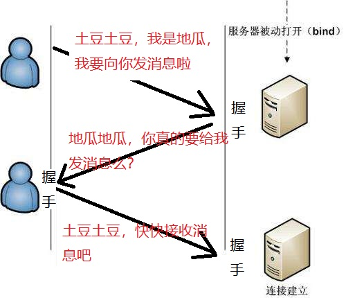
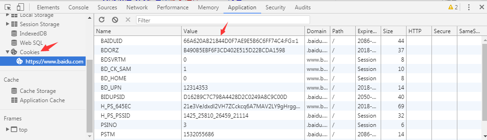

通信协议
依照一种规则进行交流
浏览器 ---> 服务器之间的交流 TCP协议
TCP是面向连接的，无论哪一方向另一方发送数据之前，都必须先在双方之间建立一条连接。在TCP/IP协议中，TCP 协议提供可靠的连接服务，连接是通过三次握手进行初始化的。
三次握手



HTTP（无状态的协议）
基于TCP协议的一种高级协议, 用于客户端和服务器直接的通信
这种通信最大的问题在哪？
问题就在于每次收到返回的页面后，连接都断开了。
这种通讯的问题就在于， 你挂了电话， 还怎么通讯？
比如你刚刚登陆过的账号密码， 如果你再想要登陆的话， 还要输入一遍。。。 举个简单的例子， 你逛淘宝时候每看一个商品都要重新登陆一下。。。那酸爽；
cookie 会话跟踪技术
一个网站从打开到浏览（包括这个网站的其他子页面）到最后关闭浏览器整个过程叫一个“会话”。
在一次会话从开始到结束的整个过程，全程跟踪记录客户端的状态（例如：是否登录、购物车信息、是否已下载、是否 已点赞、视频播放进度等等）。
多次请求页面，数据共享
cookie的存取
document.cookie = "username=zhangsan";
console.log(document.cookie);
注意：cookie是http/https协议下的技术，大部分浏览器都不支持本地file文件对cookie操作
cookie的时效： expires
var d = new Date();
d.setxxx(); //将d设置到过期的日期
document.cookie = "username=zhangsan;expires="+d;
cookie有哪些特点？
1 只能使用文本 (如果浏览器可以随意在客户端机器上生成文件，比如身份牌是个定时炸弹，安全问题将会变得非常严重)
2 单条存储有大小限制 4KB (文件若没有大小限制，比如身份牌的重量是140斤，挂脖子能不能累死？)
3 数量限制 （一般浏览器，限制大概在50条左右，你家的门禁卡里能存的下一部蓝光高清么？）
4 读取有域名限制 不可跨域读取，只能由来自 写入cookie的 同一域名 的网页可进行读取。 简单的讲就是，谁写的cookie，谁才有权利读取 （身份牌是我发你的，当然只有我能读取，你媳妇儿的手机自动连接了邻居老王家的wifi，你知道这意味着什么 吗？)
5 时效限制 每个cookie都有时效，最短的有效期是，会话级别：就是当浏览器关闭，那么cookie立即销毁 （安全学基本理论：密码锁每次打开都需要重新输入密码，输入一次密码，以后就不再验证，就没有安全可言 ) 问： 信用卡为什么会有过期时间？

另： cookie直接存中文会造成未知错误，所以一般使用encodeURIComponent()进行编码，decodeURIComponent进行解码
练习
1、封装cookie的设置，获取和删除
2、保存用户信息
3、购物车